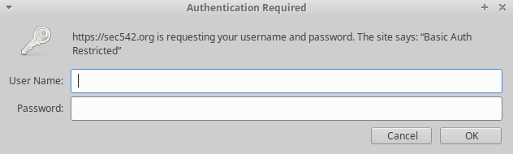
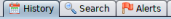
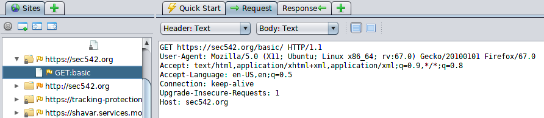
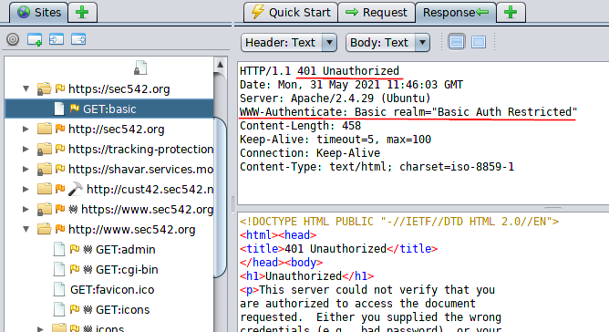

Failed Authentication (example)
Configre the proxy on the Browser, to intercept it with ZAP
Unauthorized Access1. Go to the webpage Form login
2. Sites → <site> → GET:<loginPage> → Request tab
Or you can check History Tab
 5. Sites → <site> → GET:<loginPage> → Response Tab
